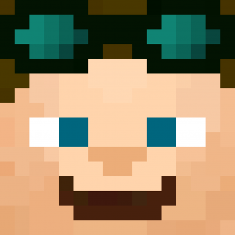

<section class="section" style="background-image:url(https://kde.org/announcements/plasma/5/5.22.0/volma.webp);background-size:cover">
  <div class="container">


    <div id="notepad-window" class="window box" cdkDrag (click)="this.reorderWindows(notepadWindow)"
         (cdkDragStarted)="reorderWindows(notepadWindow)" #notepadWindow>
      <!-- Title bar start -->
      <div class="title-bar-width">
        <div class="title-bar" cdkDragHandle>
          <div class="mt-1">
            <i class="fa-solid fa-file-lines mx-2"></i>
            <span class="logo-description">Editing {{this.router.url}}/index.html - Notepad</span>
          </div>
          <div class="window-buttons">
            <span class="minimize" (click)="toggleWindow('#notepad-window'); $event.stopPropagation()">&#8212;</span>
            <span class="maximize" (click)="toggleFullscreen('#notepad-window'); $event.stopPropagation()">□</span>
            <span class="close" (click)="toggleWindow('#notepad-window',true); $event.stopPropagation()">✕</span>
          </div>
        </div>
        <div class="url-bar">
          <button class="button is-success" (click)="this.saveNotepad()">
            <i class="fa-solid fa-floppy-disk mx-2"></i> Save
          </button>

          <a class="button is-warning" (click)="this.reloadNotepad()">
            <i class="fa-solid fa-arrows-rotate mx-2"></i> Reload
          </a>
        </div>
      </div>
      <div class="has-background-white window-content">
        <textarea class="textarea has-fixed-size" id="notepad-content" style="border: 0; height: 50rem;"></textarea>
      </div>
    </div>

    <div id="explorer-window" class="window box" cdkDrag (click)="reorderWindows(explorerWindow)"
         (cdkDragStarted)="reorderWindows(explorerWindow)" #explorerWindow>
      <!-- Title bar start -->
      <div class="title-bar-width">
        <div class="title-bar" cdkDragHandle>
          <div class="mt-1">
            <i class="fa-solid fa-folder mx-2"></i>
            <span class="logo-description">{{this.router.url}} - File Manager</span>
          </div>
          <div class="window-buttons">
            <span class="minimize" (click)="toggleWindow('#explorer-window'); $event.stopPropagation()">&#8212;</span>
            <span class="maximize" (click)="toggleFullscreen('#explorer-window'); $event.stopPropagation()">□</span>
            <span class="close" (click)="toggleWindow('#explorer-window',true); $event.stopPropagation()">✕</span>
          </div>
        </div>
        <div class="url-bar">
          <i class="fa-solid fa-folder-tree mx-2"></i>
          <input class="domain-path" value="{{this.href}}" (keyup.enter)="this.router.navigateByUrl(folderPath.value)"
                 #folderPath/>
        </div>
      </div>
      <div class="has-background-white window-content">
        <div class="columns">
          <div class="column is-2 has-background-grey-lighter pt-5 has-text-left">
            <ng-container *ngFor="let path of this.components">
              <div class="columns is-1 has-text-left" *ngIf="path.split('/').length === 1">
                <div class="column">
                  <a class="button is-ghost mb-2" (click)="this.router.navigateByUrl(path)">
                    
                    /{{ path !== '**' ? path : 'dev/null' }}
                  </a>
                </div>
              </div>
            </ng-container>
          </div>
          <div class="column">
            <div class="columns is-vcentered p-2 is-multiline">
              <ng-container *ngFor="let path of this.components">
                <div class="column is-1-desktop is-2-mobile has-text-centered-desktop" *ngIf="this.canShowDir(path)">
                  <a class="button is-small is-text mb-2" (click)="this.router.navigateByUrl(path)"
                     (contextmenu)="this.onFileRightClick($event, path)">
                    
                  </a>
                  {{ path !== '**' ? path.split("/").pop() : '/dev/null' }}
                </div>
              </ng-container>
              <div class="column is-1-desktop is-2-mobile has-text-centered-desktop">
                <a class="button is-small is-text mb-2" (click)="this.openNotepad(); $event.stopPropagation()"
                   (contextmenu)="this.onFileRightClick($event, 'index.html')">
                  
                </a>
                index.html
              </div>
            </div>
          </div>
        </div>
      </div>
    </div>

    <!-- an hidden div is created to set the position of appearance of the menu-->
    <div style="visibility: hidden; position: fixed;"
         [style.left]="menuTopLeftPosition.x"
         [style.top]="menuTopLeftPosition.y"
         [matMenuTriggerFor]="rightMenu"></div>

    <!-- standard material menu -->
    <mat-menu #rightMenu="matMenu">
      <ng-template matMenuContent let-item="item">
        <button mat-menu-item (click)="this.deleteFile($event)">Delete</button>
      </ng-template>
    </mat-menu>

    <div id="firefox-window" class="window box" cdkDrag (click)="reorderWindows(firefoxWindow)"
         (cdkDragStarted)="reorderWindows(firefoxWindow)" #firefoxWindow>
      <!-- Title bar start -->
      <div class="title-bar-width">
        <div class="title-bar" cdkDragHandle>
          <div class="mt-1">
            <i class="fa-brands fa-firefox-browser mx-2"></i>
            <span class="logo-description">{{this.title}} - Mozilla Firefox</span>
          </div>
          <div class="window-buttons">
            <span class="minimize" (click)="toggleWindow('#firefox-window'); $event.stopPropagation()">&#8212;</span>
            <span class="maximize" (click)="toggleFullscreen('#firefox-window'); $event.stopPropagation()">□</span>
            <span class="close" (click)="toggleWindow('#firefox-window',true); $event.stopPropagation()">✕</span>
          </div>
        </div>
        <div class="url-bar">
          <i class="fa-solid fa-lock mx-2"></i>
          <span class="domain-name">localhost:4200</span>
          <input class="domain-path title-bar-width" value="{{this.href}}"
                 (keyup.enter)="this.router.navigateByUrl(domainPath.value)"
                 #domainPath/>
        </div>
      </div>
      <div id="main-content" class="window-content has-background-white">
        <nav class="navbar has-background-success-dark is-success has-shadow" role="navigation"
             aria-label="main navigation"
             *ngIf="this.components.has(this.router.url.substring(1)) && this.router.url !== '/**'">
          <div class="navbar-brand">
            <a class="navbar-item" routerLink="home">
              
            </a>

            <a role="button" class="navbar-burger has-text-light" aria-label="menu" aria-expanded="false"
               data-target="navbarBasicExample" (click)="this.navbarExtended = !this.navbarExtended;"
               [ngClass]="this.navbarExtended ? 'is-active' : ''">
              <span aria-hidden="true"></span>
              <span aria-hidden="true"></span>
              <span aria-hidden="true"></span>
            </a>
          </div>

          <div class="navbar-menu has-background-success-dark is-success"
               [ngClass]="this.navbarExtended ? 'is-active' : ''">
            <div class="navbar-start">
              <a class="navbar-item" routerLink="home" (click)="this.navbarExtended = false;">
                Home
              </a>
              <a class="navbar-item" routerLink="donate" (click)="this.navbarExtended = false;">
                Donate
              </a>
            </div>

            <div class="navbar-end">
              <div class="navbar-item">
                <div class="buttons">
                  <a href="https://www.youtube.com/channel/UCtPiCXgdX4A3UCk-2oYZITw" class="has-text-light mx-2"
                     target="_blank">
                    <i class="fa-brands fa-youtube fa-lg"></i>
                  </a>
                  <a href="https://www.curseforge.com/members/samo_lego/projects/" class="has-text-light mx-2"
                     target="_blank">
                    <i class="fa-solid fa-fire-flame-curved fa-lg"></i>
                  </a>
                  <a href="https://github.com/samolego" class="has-text-light mx-2" target="_blank">
                    <i class="fa-brands fa-github fa-lg"></i>
                  </a>
                </div>
              </div>
            </div>
          </div>
        </nav>
        <!-- Content start -->
        <router-outlet>
          <!-- Content -->
        </router-outlet>
      </div>
    </div>

  </div>
</section>
<footer class="footer p-1 has-background-grey-dark" style="z-index: 110;">
  <div class="columns is-vcentered">
    <div class="column is-11 has-text-centered">
      <button class="button is-ghost">
        
      </button>
      <button id="firefox-window-button" class="button" [class.is-dark]="this.activeWindows.has(firefoxWindow)"
              [class.is-ghost]="!this.activeWindows.has(firefoxWindow)"
              (click)="toggleWindow('#firefox-window'); reorderWindows(firefoxWindow)">
        
      </button>
      <button class="button" id="explorer-window-button" [class.is-dark]="this.activeWindows.has(explorerWindow)"
              [class.is-ghost]="!this.activeWindows.has(explorerWindow)"
              (click)="toggleWindow('#explorer-window'); reorderWindows(explorerWindow)">
        
      </button>
    </div>
    <div class="column has-text-light">{{ this.time | date: 'hh:mm:ss a' }}</div>
  </div>
</footer>
